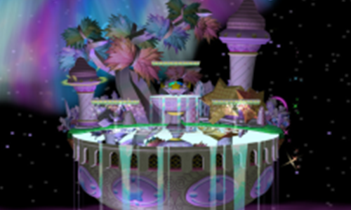
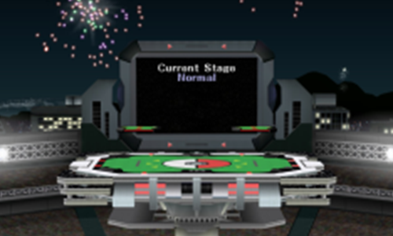

Final Destination
★★★★★
Final Destination
★★★★★
Good for juggling
can kill fastfallers really well
Overall Marth's best stage
Battle Feild
★★★☆☆
I would say a bad stage for Marth vs the spacies, good against peach, and ok vs the rest

Fountin Of Dreams
★★★★☆
Pretty good against the MU's that get edge guarded easily as you don't die due to blastzone size, but they die better than Battle Field as it can change to FD & the size is bigger so can DD more
Fuck brining Yoshi here tho

Pokemon Stadium
★★★☆☆
Frozen stadium is good for nearly all MU's
IKD about unfrozen as I dont play outside slippi rn lol
 Dream Land
★☆☆☆☆
Dream Land
★☆☆☆☆
Fuck, its bad
nothing dies and the platform heights are bad for Marth
although he too does not die on this stage
 Yoshi's Story
★★★★☆
Yoshi's Story
★★★★☆
Pretty good for marth
can kill early
have an fully I frame stall and platforms are good
just watch out vs people who like this stage more
(yoshi, ganon, sheik, etc)